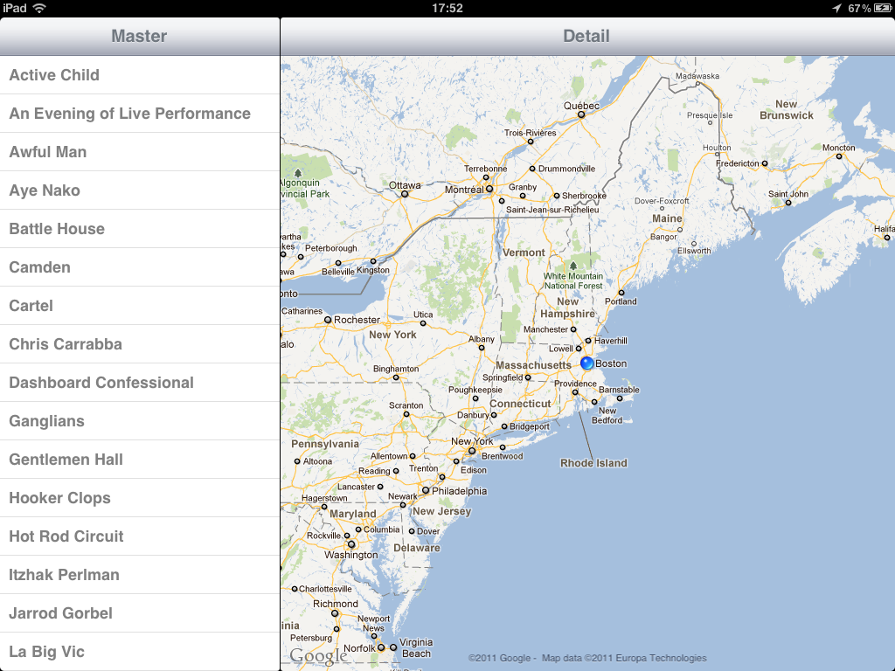
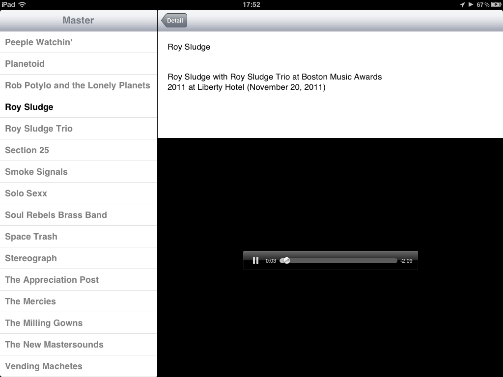

First Hackathon Experience: Introducing Green Room Radio
Yesterday, I went to my first Hackathon: the AT&T Mobile App Hackathon in Boston. It was a very fun event (thanks to the organizers) that I recommend to every people interested in new technologies, being a developer or not.
My team was composed of Alki (from wattnow), Ming and Charles. Here was our idea. Living in big cities, many gigs happen every night, mostly with local bands you’re not familiar with. Exploring the local scene is an exciting adventure but it requires a lot of work and can be time-consuming. What if an app could automatically create and play a playlist of the bands playing in your neighborhood tonight? We worked on that app. We called it Green Room Radio.
Geolocation + Songkick + Bandcamp
Technically speaking, we created a native iOS app, running on iPad, iPhone and iPod Touch executing the following tasks:
- geolocation of the user
- fetching of JSON data of all concerts near the user position from the Songkick API (thanks to Sabrina for providing us an API key so quickly on a saturday)
- fetching of JSON data from the artists playing from the Bandcamp API
- highlighting artists know from Bandcamp for which a track was available to be streamed
We started from scratch, wrote the first line of code at 1.30pm and by 7pm, were ready for our demo of a functional-but-ugly app. Here are some screenshots:


What happens next?
Of course, the app needs some design work. Then we’d love to get some feedback from Songkick and Bandcamp. Eventually, we could add many new features: integrating other services, featuring social sharing options, providing links to purchase concert tickets or purchase music, etc.
And as we love the name “Green Room Radio”, we’re also aware that it might be pretty misleading for people who don’t know what a green room is (I was part of them) so we might have to find a new name for it.
Hopefully, the app will end up on the App Store but in the meantime, if you want to try this app, have some feedback to share, or a name suggestion, feel free to contact me.
More links about the event
Recap post from Alex Donn(edit: 💀 link)- Facebook photo bucket